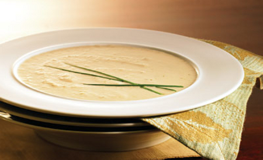

Ejercicio recetas
SOPA DE CEBOLLA (4 Personas)
Ingredientes
Proceso

Ingredientes:
1 Kg. de cebollas.
2 l. de caldo de carne.
100 gr. mantequilla.
1 cucharada de harina.
100 gr. de queso emmental suizo o gruyére rallado.
Pan tostado en rebanadas.
Tomillo.
1 hoja de laurel.
Pimienta.
Proceso:
Pelar y partir las cebollas en rodajas finas.
Rehogarlas con la mantequilla, sal y pimienta a fuego lento hasta que estén transparentes sin dorarse.
Añadir la harina sin dejar de remover.
Ponerlo en una cazuela con el caldo, el tomillo y el laurel.
Dejar cocer a fuego lento durante unos 15 minutos.
Poner las rebanadas de pan encima, espolvorear el queso y gratinar al horno.